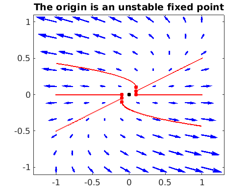
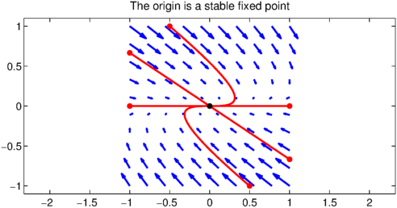
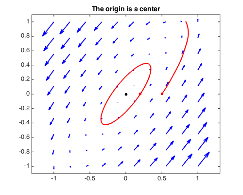
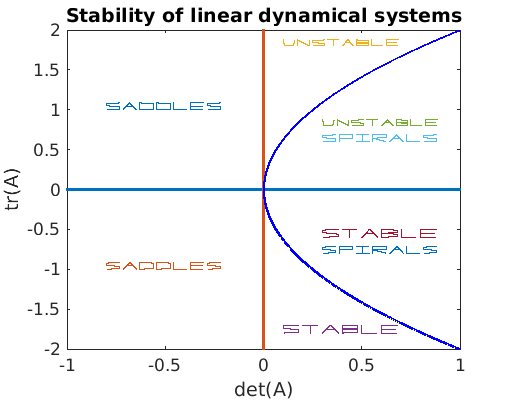
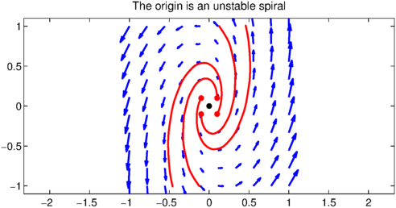
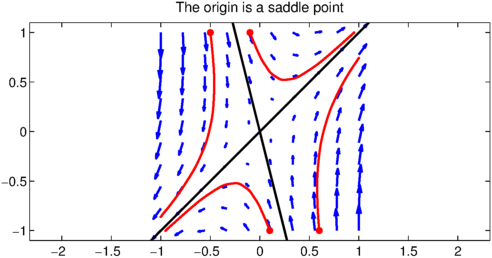
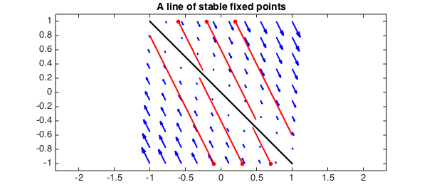
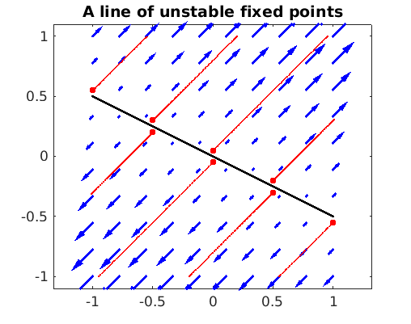
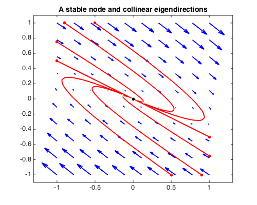
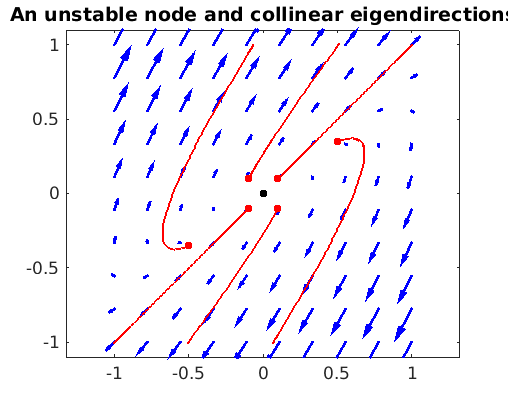

A linear dynamical system in $\mathbf{R}^2$ can be written as
$$ x'(t) = A x(t), \qquad x(0) = x_0, $$
where $A$ is a $2\times 2$ matrix. If $\lambda_1$ and $\lambda_2$ are the eigenvalues of $A$ (assuming that $A$ is diagonalizable) with eigenvectors $v_1$ and $v_2$, then the solution is given by
$$ x(t) = \alpha_1 e^{\lambda_1 t} v_1 + \alpha_2 e^{\lambda_2 t} v_2. $$
The solution thus depends heavily on the eigenvalues and eigenvectors of $A$; see also [1] and [2]. If both eigenvalues have positive real part, then the solution must diverge. The following code uses Chebfun2 first to plot the phase plane, then to plot some individual trajectories. In Chebfun2, the phase plane is given by a chebfun2v object and the trajectories can be computed with ode45. In each plot, the initial value of each solution is marked with a dot.
LW = 'linewidth'; FS = 'fontsize'; MS = 'markersize';
g = chebfun2v(@(x,y) x, @(x,y) y); % identity chebfun2v
A = [2 -2;0 1]; [EV, EW] = eig(A); % matrix of the system and eigenvalues
G = A*g; T = [0 3]; % phase plane and time interval
fprintf('eigenvalues of A:\n'), disp(diag(EW)')
fprintf('eigenvectors of A:\n'), disp(EV)
figure('position', [0 0 500 400])
quiver(G,'b',LW,2), hold on, axis equal
initvals = [.1 .05; -.1 -.05; -.1,-.05; -.1,0; .1,0];
for k = 1:size(initvals,1)
[~, y] = ode45(G,T,initvals(k,:));
plot(y,'r',LW,2), plot(y(0),'r.',MS,20)
end
initvals = [.1 .1; -.1 -.1];
for k = 1:size(initvals,1)
[~, y] = ode45(G,2*T/3,initvals(k,:));
plot(y,'r',LW,2), plot(y(0),'r.',MS,20)
end
plot(0,0,'k.',MS,20), hold off
title('The origin is an unstable fixed point',FS,14)
eigenvalues of A:
2 1
eigenvectors of A:
1.000000000000000 0.894427190999916
0 0.447213595499958

Since at least one of the eigenvalues has positive real part, the phase portrait has an unstable fixed point at the origin. If both eigenvalues have nonpositive real part, then the solution can not grow infinitely large in absolute value. The origin is here a stable fixed point, and all trajectories approach that point.
A = [-1 3; 0 -3]; [EV, EW] = eig(A);
fprintf('eigenvalues of A:\n'), disp(diag(EW)')
fprintf('eigenvectors of A:\n'), disp(EV)
G = A*g; T = [0 6];
quiver(G,'b',LW,2), hold on, axis equal
initvals = [1 -2/3; -1 2/3; .5 -1; -.5 1; 1 0; -1 0];
for k = 1:size(initvals,1)
[~, y] = ode45(G,T,initvals(k,:));
plot(y,'r',LW,2), plot(y(0),'r.',MS,20)
end
plot(0,0,'k.',MS,20), hold off
title('The origin is a stable fixed point',FS,14)
eigenvalues of A:
-1 -3
eigenvectors of A:
1.000000000000000 -0.832050294337844
0 0.554700196225229

When both eigenvalues are imaginary, the phase portrait has a center.
A = [2 -2;3 -2]; [EV, EW] = eig(A);
fprintf('eigenvalues of A:\n'), disp(diag(EW)')
fprintf('eigenvectors of A:\n'), disp(EV)
G = A*g; T = [0 5];
quiver(G,'b',LW,2), hold on, axis equal
initvals = [.2 0; .5 0];
for k = 1:size(initvals,1)
[~, y] = ode45(G,T,initvals(k,:));
plot(y,'r',LW,2), plot(y(0),'r.',MS,20)
end
plot(0,0,'k.',MS,20), hold off
title('The origin is a center',FS,14)
eigenvalues of A: Column 1 0.000000000000000 - 1.414213562373095i Column 2 0.000000000000000 + 1.414213562373095i eigenvectors of A: Column 1 0.516397779494322 + 0.365148371670111i 0.774596669241483 + 0.000000000000000i Column 2 0.516397779494322 - 0.365148371670111i 0.774596669241483 + 0.000000000000000i

Of course, not every matrix has only real or imaginary eigenvalues. Assuming the entries of $A$ are real, the remaining cases of complex eigenvalues are most conveniently described by the trace $\mathrm{tr}(A) = \lambda_1 + \lambda_2 =: \tau$ and the determinant $\mathrm{det}(A) = \lambda_1 \lambda_2 =: \Delta$ of the matrix $A$, since the eigenvalues of are given by
$$ \lambda_{1,2} = \frac12(\tau \pm \sqrt{\tau^2 - 4\Delta}). $$
All cases can be summarized in the following picture, where the parabola is defined by $\tau^2 - 4\Delta = 0$.
s1 = .3*scribble('stable'); s2 = .3*scribble('unstable');
s3 = .3*scribble('saddles'); s4 = .3*scribble('spirals');
rt = chebfun('2*sqrt(x)',[0 1],'splitting','on');
plot([-1 1],[0 0],LW,1.6), hold on
plot([0 0],[-2 2],LW,1.6),
plot([rt -rt],'b',LW,1.6),
labels = [s3 - .5+1i; s3 - .5-1i; s2 + .4+1.8i; s1 + .4-1.8i; ...
s2 + .6+.8i; s4 + .6+.6i; s1 + .6-.6i; s4 + .6-.8i];
plot(labels,LW,1)
title('Stability of linear dynamical systems',FS,14)
xlabel('det(A)',FS,14), ylabel('tr(A)',FS,14), hold off

So far we have seen systems with a stable and an unstable fixed point, and one with a center, which occurred since the corresponding matrix $A$ has zero trace and positive determinant. This is the borderline between stable and unstable spirals. Here is a system with an unstable spiral, which corresponds to $A$ having positive trace $\tau$ and positive determinant $\Delta$ with $\tau < 2\sqrt{\Delta}$.
A = [2 -2;8 1]; [EV, EW] = eig(A);
fprintf('eigenvalues of A:\n'), disp(diag(EW)')
fprintf('eigenvectors of A:\n'), disp(EV)
G = A*g; T = [0 2];
quiver(G,'b',LW,2), hold on, axis equal
initvals = [.1 .1; -.1 -.1; .1 -.1; -.1 .1];
for k = 1:size(initvals,1)
[~, y] = ode45(G,T,initvals(k,:));
plot(y,'r',LW,2), plot(y(0),'r.',MS,20)
end
plot(0,0,'k.',MS,20), hold off
title('The origin is an unstable spiral',FS,14)
eigenvalues of A: Column 1 1.500000000000000 - 3.968626966596886i Column 2 1.500000000000000 + 3.968626966596886i eigenvectors of A: Column 1 0.055901699437495 + 0.443705983732471i 0.894427190999916 + 0.000000000000000i Column 2 0.055901699437495 - 0.443705983732471i 0.894427190999916 + 0.000000000000000i

A system with a stable spiral, which corresponds to $A$ having negative trace $\tau$ and positive determinant $\Delta$ with $\tau > -2\sqrt{\Delta}$:
A = [-.5 -2;2 -.2]; [EV, EW] = eig(A);
fprintf('eigenvalues of A:\n'), disp(diag(EW)')
fprintf('eigenvectors of A:\n'), disp(EV)
G = A*g; T = [0 10];
quiver(G,'b',LW,2), hold on, axis equal
initvals = [0 1; 1 0; 0 -1; -1 0];
for k = 1:size(initvals,1)
[~, y] = ode45(G,T,initvals(k,:));
plot(y,'r',LW,2), plot(y(0),'r.',MS,20)
end
plot(0,0,'k.',MS,20), hold off
title('The origin is a stable spiral',FS,14)
eigenvalues of A: Column 1 -0.350000000000000 - 1.994367067517913i Column 2 -0.350000000000000 + 1.994367067517913i eigenvectors of A: Column 1 0.707106781186548 + 0.000000000000000i -0.053033008588991 - 0.705115238808523i Column 2 0.707106781186548 + 0.000000000000000i -0.053033008588991 + 0.705115238808523i

A system with a saddle, which corresponds to $A$ having negative determinant:
A = [1 1; 4 -2]; [EV, EW] = eig(A);
fprintf('eigenvalues of A:\n'), disp(diag(EW)')
fprintf('eigenvectors of A:\n'), disp(EV)
G = A*g; T = [0 2];
quiver(G,'b',LW,2), hold on, axis equal
initvals = [-.1 1; -.5 1; .1 -1; .6 -1];
for k = 1:size(initvals,1)
[~, y] = ode45(G,T,initvals(k,:));
plot(y,'r',LW,2), plot(y(0),'r.',MS,20)
end
plot(.275*[-1, 1],[1.1 -1.1],'k',LW,2)
plot([-1.1 1.1],[-1.1 1.1],'k',LW,2), hold off
title('The origin is a saddle point',FS,14)
eigenvalues of A:
2 -3
eigenvectors of A:
0.707106781186547 -0.242535625036333
0.707106781186547 0.970142500145332

A system with a line of stable fixed points, which corresponds to $A$ having negative trace and zero determinant:
A = [1 1; -2 -2]; [EV, EW] = eig(A);
fprintf('eigenvalues of A:\n'), disp(diag(EW)')
fprintf('eigenvectors of A:\n'), disp(EV)
G = A*g; T = [0 2];
quiver(G,'b',LW,2), hold on, axis equal
initvals = [-.6 1; -.2 1; .2 1; .7 -1; .3 -1; -.1 -1];
for k = 1:size(initvals,1)
[~, y] = ode45(G,T,initvals(k,:));
plot(y,'r',LW,2), plot(y(0),'r.',MS,20)
end
plot([-1 1],[1 -1],'k-',LW,2), hold off
title('A line of stable fixed points',FS,14)
eigenvalues of A:
0 -1
eigenvectors of A:
0.707106781186547 -0.447213595499958
-0.707106781186547 0.894427190999916

A system with a line of unstable fixed points, which corresponds to $A$ having positive trace and zero determinant:
A = [1 2; 1 2]; [EV, EW] = eig(A);
fprintf('eigenvalues of A:\n'), disp(diag(EW)')
fprintf('eigenvectors of A:\n'), disp(EV)
G = A*g; T = [0 2];
quiver(G,'b',LW,2), hold on, axis equal
initvals = [0 .05; -.5 .3; -1 .55; 1 -.55; 0 -.05; .5 -.3];
for k = 1:size(initvals,1)
[~, y] = ode45(G,T,initvals(k,:));
plot(y,'r',LW,2), plot(y(0),'r.',MS,20)
end
initvals = [-.5 .2; .5 -.2];
for k = 1:size(initvals,1)
[~, y] = ode45(G,T/2,initvals(k,:));
plot(y,'r',LW,2), plot(y(0),'r.',MS,20)
end
plot([-1 1],[.5 -.5],'k',LW,2), hold off
title('A line of unstable fixed points',FS,14)
eigenvalues of A:
0 3
eigenvectors of A:
-0.894427190999916 -0.707106781186547
0.447213595499958 -0.707106781186548

A system with a stable node and collinear eigendirections, which corresponds to $A$ having negative trace $\tau$ and positive determinant $\Delta$ with $\tau = -2\sqrt{\Delta}$, so that both eigenvalues are equal:
A = [1 4;-1 -3]; [EV, EW] = eig(A);
fprintf('eigenvalues of A:\n'), disp(diag(EW)')
fprintf('eigenvectors of A:\n'), disp(EV)
G = A*g; T = [0 4];
quiver(G,'b',LW,2), hold on, axis equal
initvals = [-1 .5; 1 -.5; -.9 1; -.5 1; .9 -1; .5 -1; 1 -.75; -1 .75];
for k = 1:size(initvals,1)
[~, y] = ode45(G,T,initvals(k,:));
plot(y,'r',LW,2), plot(y(0),'r.',MS,20)
end
plot(0,0,'k.',MS,20), hold off
title('A stable node and collinear eigendirections',FS,14)
eigenvalues of A:
-1 -1
eigenvectors of A:
0.894427190999916 -0.894427190999916
-0.447213595499958 0.447213595499958

A system with an unstable node and collinear eigendirections, which corresponds to $A$ having positive trace $\tau$ and positive determinant $\Delta$ with $\tau = 2\sqrt{\Delta}$, so that both eigenvalues are equal:
A = [-1 5/2;-5/2 4]; [EV, EW] = eig(A);
fprintf('eigenvalues of A:\n'), disp(diag(EW)')
fprintf('eigenvectors of A:\n'), disp(EV)
G = A*g; T = [0 2];
quiver(G,'b',LW,2), hold on, axis equal
initvals = [.1 .1; -.1 -.1; .5 .35; .1 -.1; -.1 .1; -.5 -.35];
for k = 1:size(initvals,1)
[~, y] = ode45(G,T,initvals(k,:));
plot(y,'r',LW,2), plot(y(0),'r.',MS,20)
end
plot(0,0,'k.',MS,20), hold off
title('An unstable node and collinear eigendirections',FS,14)
eigenvalues of A: 1.500000023560805 1.499999976439195 eigenvectors of A: 0.707106777854547 -0.707106784518549 0.707106784518548 -0.707106777854546

References
-
R. Abraham and J. E. Marsden, Foundations of Mechanics, Benjamin-Cummings, 1978.
-
S. H. Strogatz, Nonlinear Dynamics and Chaos, Addison-Wesley, 1994.